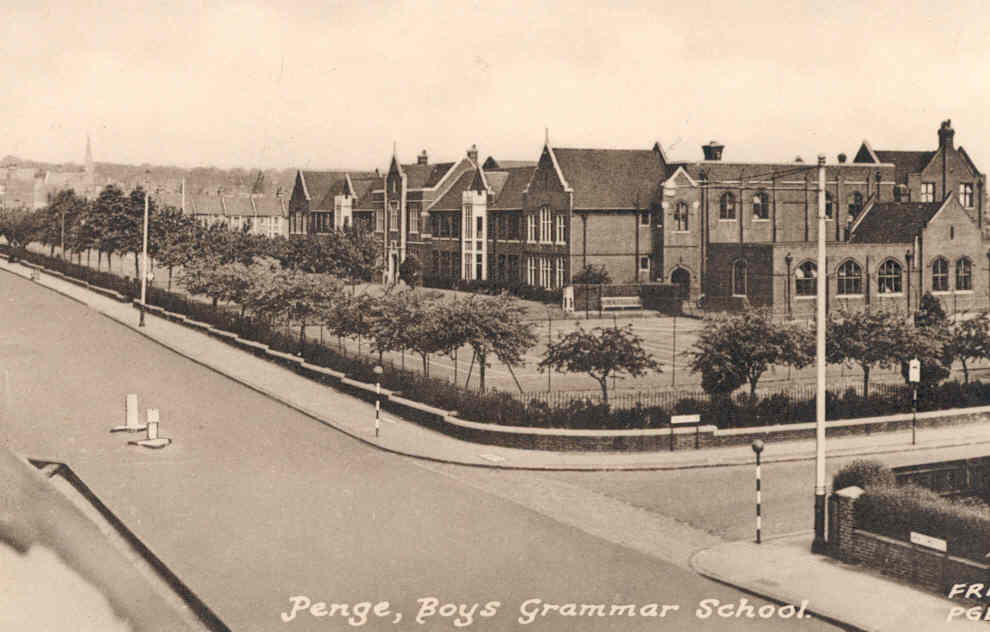

Beckenham and Penge County Grammar School for Boys
1945 - 1950

Having won a scholarship I duly started in form 1D (Mr Pearce) in September
1945. Of course, I met a whole gang of new friends. Each morning I would
walk down to West Wickham station and catch the 8.16 to Clock House to
arrive at school before 9.00 am for assembly. The train, I remember was
always packed with businessmen on their way to the city. If you were lucky
you could get a seat, but more likely had to stand for the four station
journey. (about 10 minutes)
On one such journey I can clearly remember reading aloud to a friend
extracts from a book by "Leon Cortez" called Shakespear for the working
man! It had the compartment in fits, because in my innocence I did not
understand the innuendoes involved!